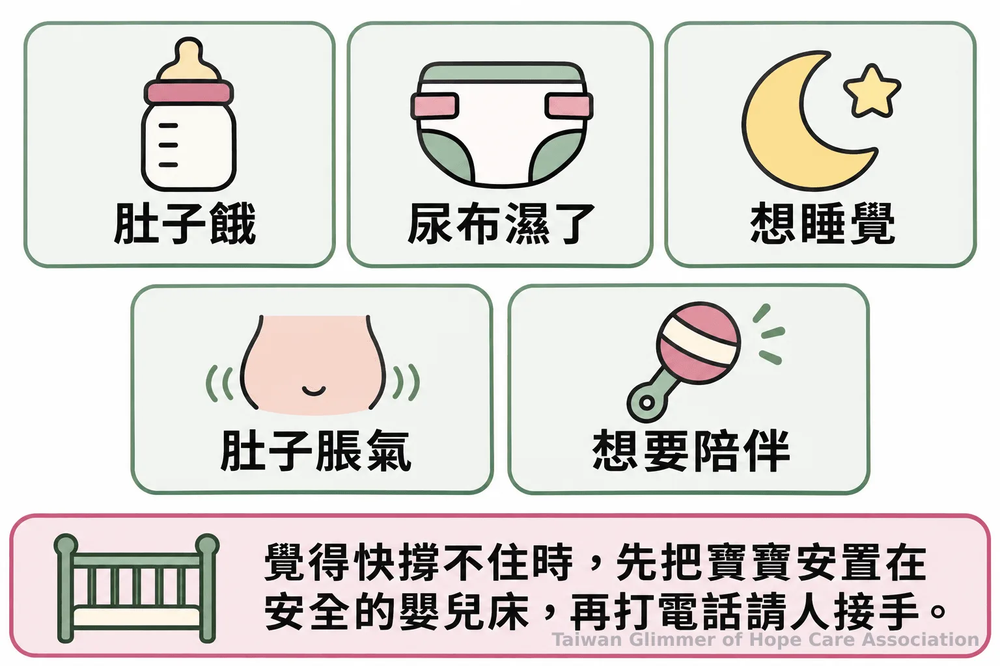
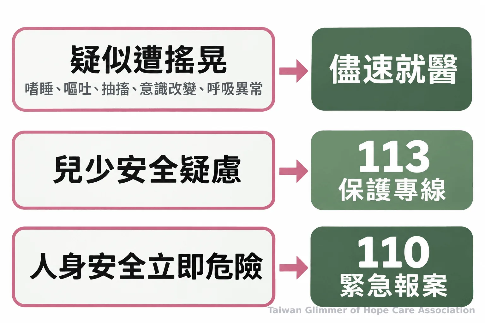

嬰兒哭鬧的安全照顧：搖晃嬰兒症候群風險與求助
嬰兒哭不停時，先確認需求並安全安撫。認識搖晃可能造成的腦傷、照顧者如何換手，以及疑慮發生時的就醫、113與110求助方式。
【微光專欄｜看見不同年紀的孩子｜系列一之 1】
嬰兒哭不停，家長、保母或臨時接手照顧的大人，可能一時想不出原因。哭聲是寶寶表達需求的方式，照顧者可以先逐項確認，再以安全、平穩的動作安撫。當疲累和煩躁升高時，先把寶寶放在安全處、找人換手；劇烈搖晃或拋接可能造成嚴重腦傷。
一、哭聲是需求訊號，頭頸仍需要保護
哭鬧不代表照顧失敗，可能是寶寶有需求尚未被滿足。未滿3歲兒童的頭頸部仍在發育，照顧者抱起或安撫時都要避免劇烈晃動。
衛生福利部國民健康署引述臺灣兒科醫學會資料指出，受虐性腦傷常見於未滿3歲兒童，尤其是2至4個月嬰兒。這是需要提高安全意識的年齡階段，哭鬧本身不代表受傷或照顧失敗；哭聲可能和飢餓、尿布潮濕、疲倦、脹氣或需要陪伴有關。
嬰兒頭頸肌肉尚未成熟，猛烈、重複或帶有加減速、旋轉的頭頸運動，可能造成嗜睡、躁動、抽搐、意識受損、嘔吐或呼吸異常，嚴重時會有顱內或視網膜出血、重大腦損傷，甚至死亡。抱起時用雙手支撐頭部和頸部，遊戲也不要拋接或用力搖晃。衛福部國民健康署的「5問2要」衛教說明了哭鬧檢查和安全安撫原則。
二、哭不停時先檢查需求，情緒升高就換手
先用「5問」確認可能需求，抱起時做到「2要」：支撐頭頸、耐心緩和情緒。照顧者快要失去耐性時，先安全放下寶寶並請人接手。
「5問」是：肚子餓不餓、尿布濕不濕、是不是累了想睡、肚子是否脹氣、是否需要有人陪伴或說話。大人可觀察、觸摸尿布與腹部，輕聲陪伴，再看寶寶的反應。每次只調整一個可能原因，比急著做很多動作更容易知道什麼讓孩子舒服。
「2要」提醒照顧者抱起寶寶時要支撐頭部和頸部，也要留意自己的情緒。安撫可以輕柔抱持、說話或拍嗝，動作保持平穩。若仍持續哭泣，可先將寶寶仰躺安置在安全嬰兒床，確認周圍沒有鬆軟物品，再短暫離開、深呼吸，並打電話請另一位照顧者或親友來接手。先停下來求援，是保護寶寶的一步。
照顧者也可以事先和家人約定換手人選與聯絡方式；更多暫停和求助方法，可參考照顧者情緒快失控時的暫停與求助方法。
PubMed 收錄的文獻回顧指出，在其評估的預防介入中，向家長與照顧者說明嬰兒哭鬧及搖晃風險，是有實證支持的一類教育措施。照顧者可預先約定換手人選，讓共同照顧者都知道支撐頭頸、避免搖晃的原則。

三、微光如何在據點陪伴孩子
微光以「在地小衛星」方式，走進已陪伴脆弱家庭孩子的單位合作，每個據點每月一堂藝術陪伴課。板橋與明穗教會合作，中壢與桃園市宣愛社區關懷協會合作，瑞芳則與愛鄰希望關懷協會合作。
瑞芳愛鄰據點在2025年8月開出第一個兒童繪畫班，是微光的起點；中壢宣愛是微光在桃園的第一個據點，於2026年9月開課。課程從藝術家作品帶出情緒主題，沒有標準答案，也不比較作品。中壢以「心情的顏色」引導孩子畫秘密花園，照片與紀錄，請見〈桃園第一個據點開課：中壢宣愛「心情的顏色」〉；瑞芳以夏卡爾「夢想花園」展開創作，照片與紀錄，請見〈瑞芳愛鄰據點：跟著夏卡爾，飛進我的夢想花園〉；板橋以秀拉點描認識色彩，照片與紀錄，請見〈板橋明穗據點：點描法，一點一點畫出自己的世界〉。
四、何時就醫或聯絡保護專線
曾經劇烈搖晃，或出現異常症狀，應儘速就醫；兒少安全疑慮可撥113，立即危險先撥110。
嗜睡、異常躁動、抽搐、意識狀態改變、嘔吐或呼吸異常，都需要儘速由醫療人員評估。沒有明顯外傷也不能單憑外觀排除腦傷；就醫時應如實說明發生經過與時間，讓醫療人員判斷後續處置。
衛生福利部保護服務司說明，113保護專線全年24小時服務，全國民眾可就兒童少年遭受虐待、疏忽或其他傷害提出通報或求助諮詢。若有人身安全立即危險，先撥110。通報或求助時，盡可能提供孩子所在位置與已知狀況；一般民眾、老師、志工不必自行查案或判斷責任，將疑慮交由專業人員評估即可。

「哭泣是寶寶在發展語言能力前與外界的溝通方式。」衛生福利部國民健康署
- 哭鬧時依序確認飢餓、尿布、睡意、脹氣與陪伴需求。
- 抱起寶寶時支撐頭頸；避免劇烈搖晃、拋接或旋轉。
- 照顧者快失控時，先讓寶寶安全躺下，再換手求助。
- 疑似受傷儘速就醫；兒少安全疑慮撥113，立即危險撥110。
常見問題
Q1: 搖晃嬰兒症候群只會發生在新生兒嗎？
衛福部資料指出，受虐性腦傷常見於未滿3歲兒童，尤其2至4個月嬰兒。任何年齡的嬰幼兒都應避免劇烈搖晃或拋接。
Q2: 寶寶沒有外傷，還需要就醫嗎？
若曾遭劇烈搖晃，或出現嗜睡、嘔吐、抽搐、意識改變或呼吸異常，應儘速就醫。外觀不能用來自行排除腦傷。
Q3: 照顧者情緒快失控時可以怎麼辦？
先讓寶寶仰躺在安全嬰兒床，再短暫離開緩和情緒，聯絡另一位照顧者或親友接手。不要抱著寶寶硬撐，也不可搖晃或拋接。
Q4: 113和110有什麼不同？
兒少安全疑慮可撥113諮詢或通報；有人身安全立即危險時先撥110。寶寶若疑似受傷或有異常症狀，應儘速就醫。
Q5: 照顧者可以怎麼預先安排換手？
先和家人、保母或其他共同照顧者約定接手人選與聯絡方式；感到難以承受時，先讓寶寶安全躺下，再聯絡對方支援。
參考文獻
- 衛生福利部國民健康署 (2024). 認識寶寶為什麼哭哭！「5問2要」遠離腦傷危害. https://www.mohw.gov.tw/cp-6646-80314-1.html
- 衛生福利部保護服務司 (2017, 更新於2026). 113保護專線介紹. https://dep.mohw.gov.tw/DOPs/cp-1183-6499-105.html
- Lopes NRL, et al. (2018). Pediatric Abusive Head Trauma Prevention Initiatives: A Literature Review. Trauma, Violence, & Abuse, 19(5), 555–566. https://pubmed.ncbi.nlm.nih.gov/27821497/
本文同步刊於 appi.news。